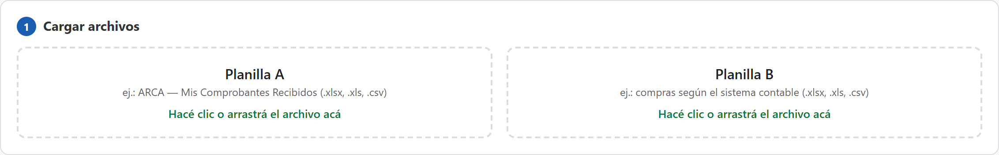
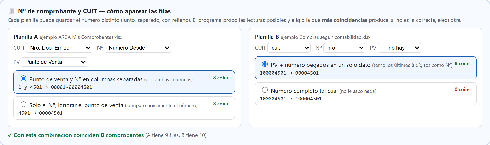
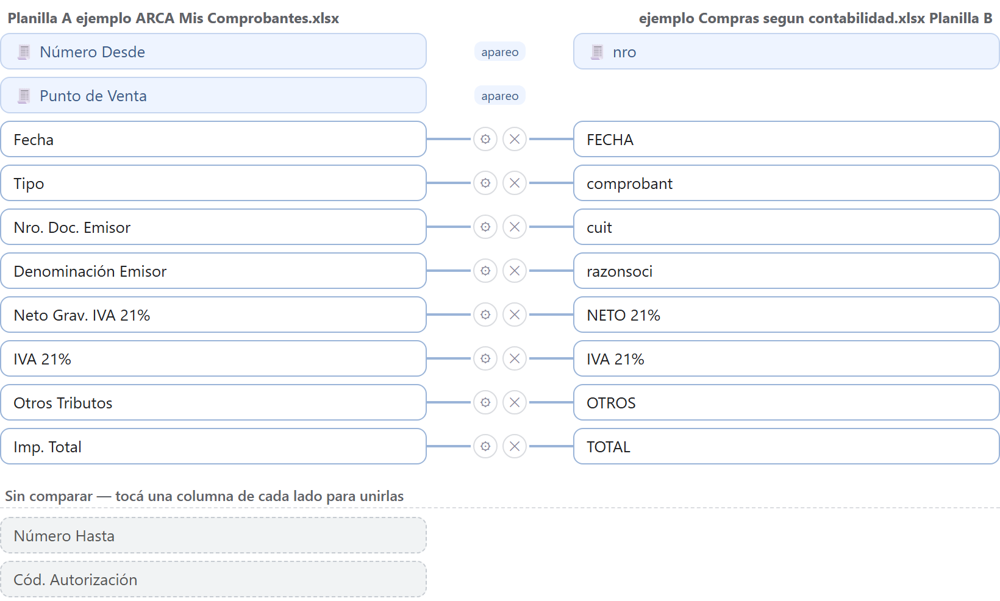
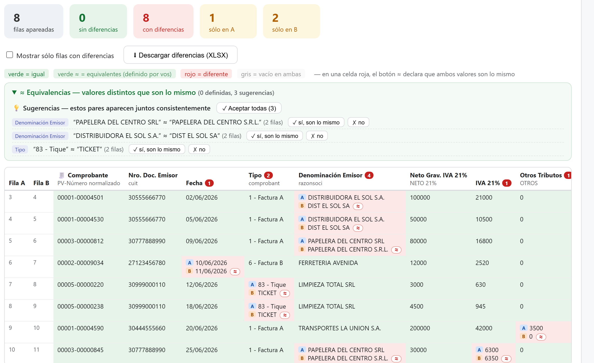
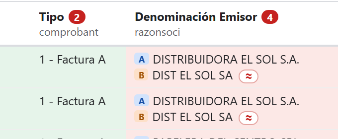
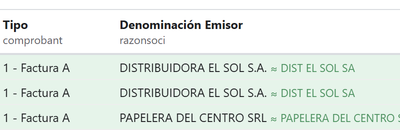

Arrastrá (o hacé clic para elegir) el Excel de ARCA en Planilla A y el de tu sistema contable en Planilla B. El programa detecta solo dónde empiezan los datos, aunque el archivo tenga títulos arriba.

El número de comprobante: cada sistema lo guarda distinto (ARCA separa punto de venta y número; los sistemas contables suelen pegarlos en un solo dato). El programa prueba las formas posibles de leerlo, elige la que más coincidencias produce y te lo muestra con ejemplos reales. Si no es la correcta, tocá otra opción.

Las columnas que se comparan: las de cada planilla aparecen enfrentadas, y las que se van a comparar están unidas por una línea.

Apretá Comparar ▶. Cada comprobante de una planilla se aparea con el de la otra (por CUIT + número), y cada dato se pinta: verde = igual, rojo = diferente (muestra los dos valores). Arriba tenés el resumen: cuántos coinciden, cuántos tienen diferencias, y cuáles están sólo en una de las dos planillas.

Pasa todo el tiempo: "83 - Tique" vs "TICKET", "DISTRIBUIDORA EL SOL S.A." vs "DIST EL SOL SA". Tocá el botón ≈ de la celda roja:

…y todas las filas con ese par se ponen verdes, marcadas con ≈:

Además, el panel "≈ Equivalencias" te sugiere solo los pares que parecen ser lo mismo, para aceptarlos de a uno o todos juntos. Todo queda memorizado: el mes que viene salen verdes sin hacer nada.
El botón ⬇ Descargar diferencias (XLSX) genera un Excel con los mismos colores: hojas Resumen, Comparación (verde/rojo), Diferencias (lista filtrable), Sólo en A y Sólo en B.